Grimm Brothers Analysis
Home
Works
Analysis
About Us
These are the stories we analyzed for our project. Some are well known, and others not so much.
Ashputtel
Briar Rose
Cat and Mouse in Partnership
Cat-Skin
Clever Elise
Clever Gretel
Clever Hans
Doctor Knowall
Frederick and Catherine
Fundevogel
Golden Bird
Hans In Luck
Hansel and Gretel
Iron Hans
Jorinda and Jorindel
King Grisley-Beard
Lilly and The Lion
Little Red Cap
Mother Mole
Old Sultan
Rapunzel
Rumplestiltskin
Snow White and Rose Red
Snowdrop
Sweetheart Roland
The Adventures of Chanticler and Partlet
The Blue Light
The Dog and The Sparrow
The Elves and The Shoe Maker
The Four Clever Brothers
The Fox and The Cat
The Fox and The Horse
The Frog Prince
The Golden Goose
The Juniper-Tree
The King of The Golden Mountain
The Litte Peasant
The Miser In the Bush
The Mouse, The Bird, and The Sausage
The Old Man and His Grandson
The Pink
The Queen Bee
The Raven
The Robber Bridegroom
The Salad
The Seven Ravens
The Story Of The Youth Who Went Forth To Learn What Fear Was
The Straw, The Coal, and The Bean
The Three Languages
The Travelling Musicians
The Turnip
The Twelve Dancing Preincesses
The Twelve Huntsman
The Valiant Little Tailor
The Water of Life
The Wedding of Mrs Fox
The White Snake
The Willow-Wren and The Bear
The Wolf and The Seven Little Kids
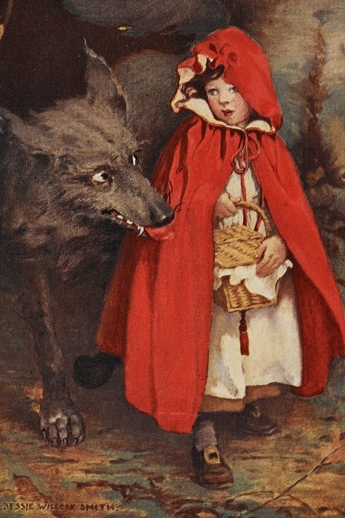 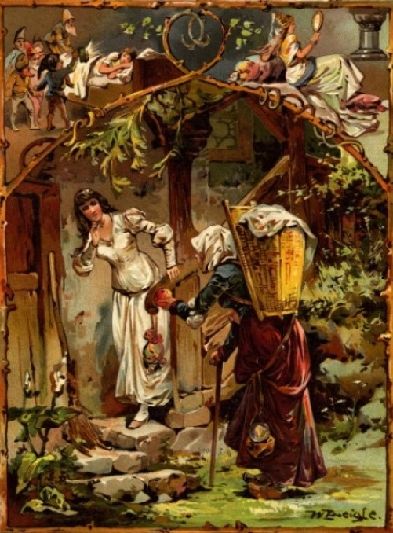
 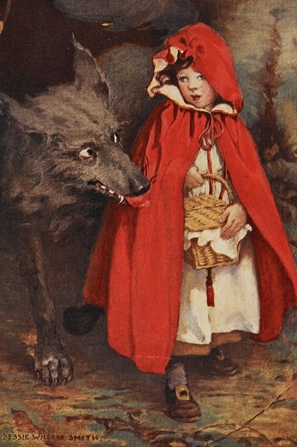
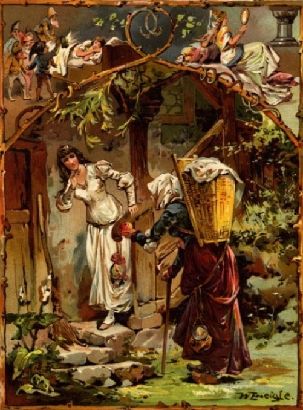
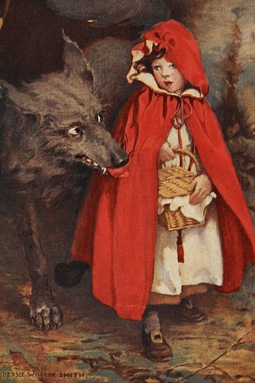
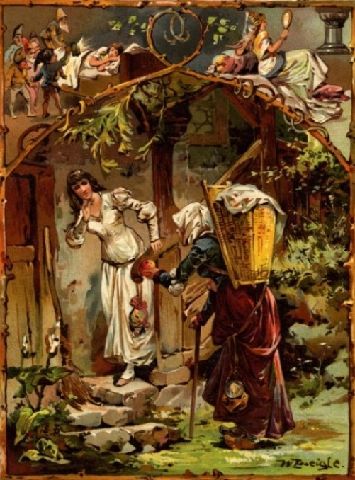
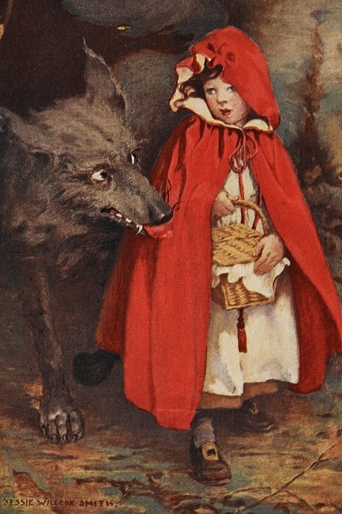
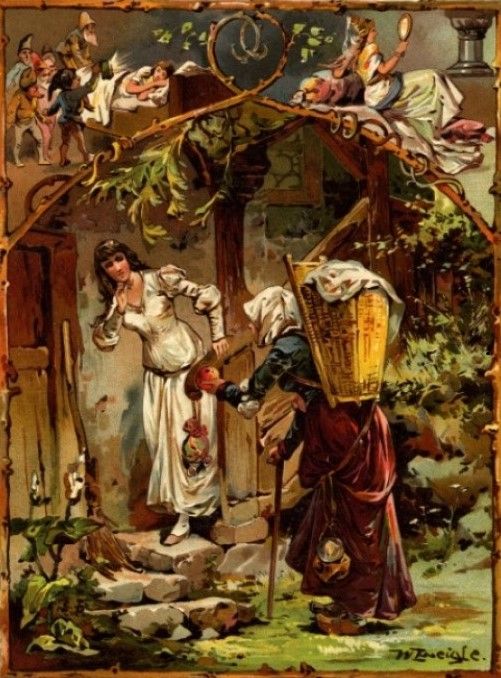
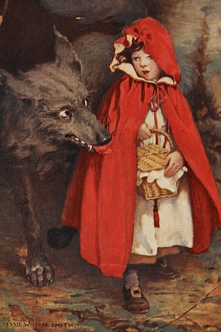
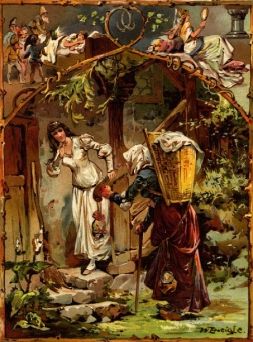
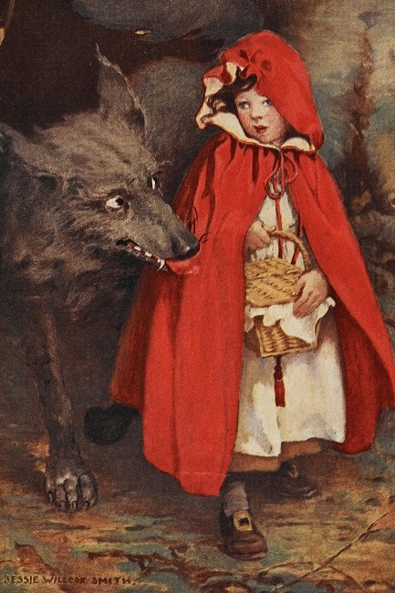
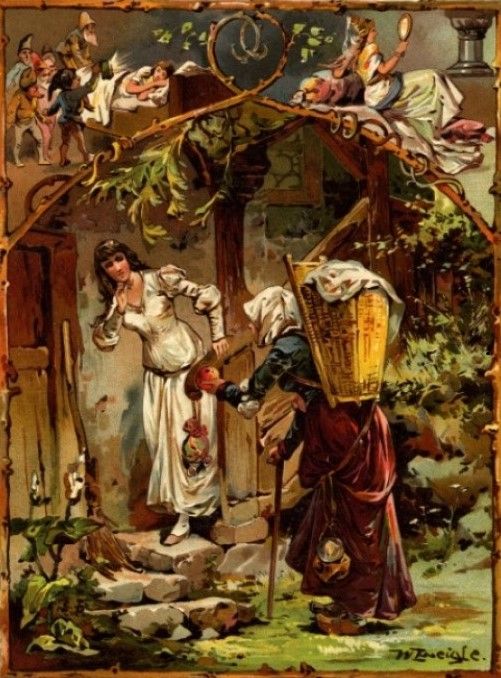
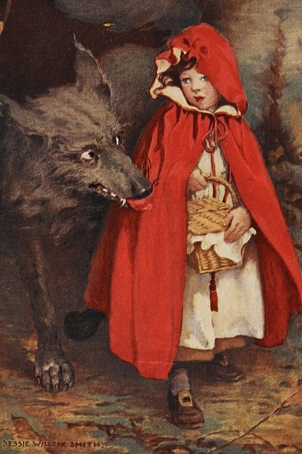
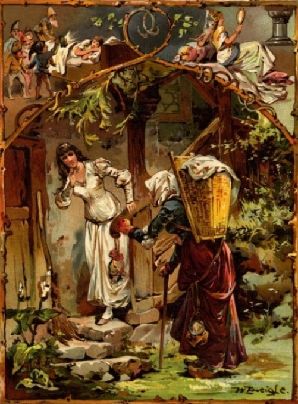